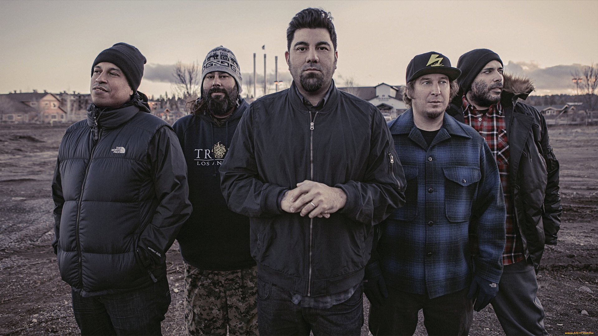

Deftones — американський альтернативний метал-гурт із Сакраменто, штат
Каліфорнія, заснований 1988 року.
Чіно Морено, Стівен Карпентер і Ейб Канінгем були друзями з одного ліцею. Свій колектив вони заснували 1988
року. Незабаром до них долучився басист Чі Ченг. На початку 1990-х були помічені агентами фірми A&R. З того
часу почалася їх світова кар'єра
Спочатку вони грали як підтримка перед такими гуртами, як KoRn, Coal Chamber, L7 і з Озі Осборном. Перший
альбом «Adrenaline» вийшов у 1995, на рік пізніше дебютного альбому гурту Korn.
Під час записувальних сесій третього студійного альбому, White Pony (2000), як офіційний учасник до колективу
приєднався DJ Франк Дельгадо (його семпли з'являлися і на раніших платівках, напр. в інтро до пісні «Minus
Blindfold» з першого альбому).

20 червня 2000 року гурт випустив свій третій альбом, White Pony, що був
зпродюсований Тері Дейтом та Deftones.
Його було записано у Саузаліто (Каліфорнія) та у студії звукозапису Ларабі у Вест Голівуді (Каліфорнія). Альбом
дебютував на третій позиції у американському чарті Білбоард з продажами 178,000 копій. На цей момент Дельгадо
(DJ Спідбоут) вже утвердився як повноцінний учасник гурту, додавши нові елементи та звучання групи. Так,
наприклад, стиль пісні «Teenager» дуже сильно відрізнявся від того, що раніше грав гурт, де прослідковуються
елементи трип-хопу та ґлітчу. У пісні «Passenger» взяв участь і вокаліст групи Tool — Мейнард Джеймс Кінан, у
пісні «Knife Party» — Родлін Гетсік, а у пісні «RX Queen» бек-вокал записав Скот Вейленд. Морено також додав ще
власні гітарні партії до кількох треків.

Detones розпочали працювати над 4 платівкою, робоча назва якої — Lovers. Cheng так прокоментував музичний напрямок у якому гурт рухався: «Ми довели, що можемо просуватись у будь-яких, для нас цікавих, музичних напрямках, а цей альбом ми хотіли зробити важким.» У зв'язку з пошкодженням голосових зв'язок під час літнього туру у 2001 році, Moreno був змушений вдатись до вокальних тренувань як запобіжних заходів. Гурт переобладнав власне репетиційне приміщення у Сакраменто на студію звукозапису та записав у ньому значну частину альбому за незначні витрати. Решту матеріалу до альбому було записано на Студії Х у Сіетлі. Співпродюсером альбому виступив Тері Дейт, а на деяких треках — і Ґреґ Велз. Випуск альбом, тривав дванадцять місяців , а витрати на нього склали $2.5 мільйони, з врахуванням штрафу, який наклала компанія Maverick, за несвоєчасний випуск.
Detones розпочали працювати над 4 платівкою, робоча назва якої — Lovers. Cheng так прокоментував музичний напрямок у якому гурт рухався: «Ми довели, що можемо просуватись у будь-яких, для нас цікавих, музичних напрямках, а цей альбом ми хотіли зробити важким.» У зв'язку з пошкодженням голосових зв'язок під час літнього туру у 2001 році, Moreno був змушений вдатись до вокальних тренувань як запобіжних заходів. Гурт переобладнав власне репетиційне приміщення у Сакраменто на студію звукозапису та записав у ньому значну частину альбому за незначні витрати. Решту матеріалу до альбому було записано на Студії Х у Сіетлі. Співпродюсером альбому виступив Тері Дейт, а на деяких треках — і Ґреґ Велз. Випуск альбом, тривав дванадцять місяців , а витрати на нього склали $2.5 мільйони, з врахуванням штрафу, який наклала компанія Maverick, за несвоєчасний випуск.
У січні 2003, Deftones залишили студію для участі у фестивалі Big Day Out у Австралії та Новій Зеландії, після
чого повернулись та завершили роботу над четвертим альбомом. 20 травня 2003 року вийшов альбом за однойменною
назвою групи «Deftones» . У чарті US Billboard 200 він стартував на 2 позиції
з
продажами 167,000 копій у перший тиждень. Альбом залишався у Billboard 100 top ще 9 тижнів. Першим синглом був
«Minerva», для другого синглу «Hexagram» було знято музичне відео, де фани спостерігають за грою групи у
скейтпарку у Сімі Волей, Каліфорнія.
Група зняла музичне відео до пісні «Bloody Cape», однак воно не потрапило
на телебачення, а лише було доступним для перегляду на офіційному сайті групи. Пізніше це відео увійшло до
B-Sides and Rarities DVD.